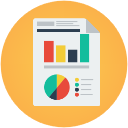

<!--
  Generated template for the ReportsPage page.

  See http://ionicframework.com/docs/components/#navigation for more info on
  Ionic pages and navigation.
-->
<ion-header>

  <ion-navbar text-center color="calm">
    <button ion-button menuToggle>
      <ion-icon name="menu"></ion-icon>
    </button>
    <ion-title>Reports</ion-title>
  </ion-navbar>

</ion-header>


<ion-content text-center class="body">
  <ion-fab right bottom (click)="PostReport()">
    <button ion-fab class="fab" color="reportheader">
      <ion-icon name="add"></ion-icon>
    </button>
  </ion-fab>

  <ion-grid>
    <ion-row > 
      <ion-col>
        
      </ion-col>
    </ion-row>

    <ion-card  style="border-radius:5px" *ngFor="let Report of reportsList" color="alpha">

      <ion-item  style="border-bottom: 1px solid coral">
        <ion-avatar item-start>
          
        </ion-avatar>
        <h2>{{Report?.username}}</h2>
      </ion-item>
    
      <ion-card-content>
        <p>{{Report?.postedReport}}</p>
      </ion-card-content>
    
      <ion-row>
        <ion-col>
          
        </ion-col>
        <ion-col>

        </ion-col>
        <ion-col center text-center>
          <ion-note style="color:black">
          {{Report?.postedtime}}
          </ion-note>
        </ion-col>
      </ion-row>
    
    </ion-card>

  </ion-grid>
  
</ion-content>
